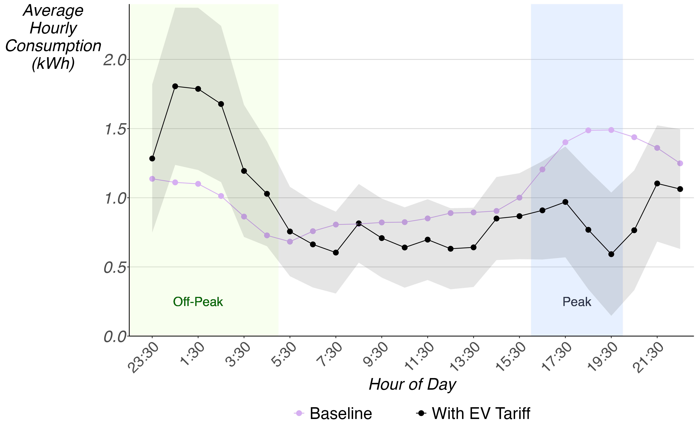

AI in Charge: Large-Scale Experimental Evidence on Electric Vehicle Charging Demand
Abstract
One of the promising opportunities offered by AI to support the decarbonization of electricity grids is to align demand with low-carbon supply. We evaluated the effects of one of the world's largest AI managed EV charging tariffs (a retail electricity pricing plan) using a large-scale natural field experiment. The tariff dynamically controlled vehicle charging to follow real-time wholesale electricity prices and coordinate and optimize charging for the grid and the consumer through AI. We randomized financial incentives to encourage enrollment onto the tariff. Over more than a year, we found that the tariff led to a 42% reduction in household electricity demand during peak hours, with 100% of this demand shifted to low-cost, low-emission off-peak periods. The tariff generated substantial consumer savings, while demonstrating potential to lower producer costs, energy system costs, and carbon emissions through significant load shifting. Overrides of the AI algorithm were low, suggesting that this tariff is likely more efficient than a real-time-pricing tariff without AI. Our findings highlight the potential for scalable AI managed charging and its substantial welfare gains for the electricity system and society. We also show that experimental estimates differed meaningfully from those obtained via non-randomized difference-in-differences analysis, due to differences in the samples in the two evaluation strategies, although we can reconcile the estimates with observables.